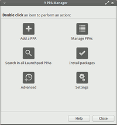

Y PPA Manager
Dieser Artikel wurde für die folgenden Ubuntu-Versionen getestet:
Ubuntu 16.04 Xenial Xerus
Ubuntu 14.04 Trusty Tahr
Zum Verständnis dieses Artikels sind folgende Seiten hilfreich:
Der Y PPA Manager  ist eine grafische Anwendung, um den Umgang mit persönlichen Paketarchiven ("Personal Package Archive", kurz PPA) zu erleichtern. Bei der grafischen Oberfläche kommt yad zum Einsatz, ein einfaches Dialog-System. Das englischsprachige Programm bietet unter anderem folgende Funktionen:
ist eine grafische Anwendung, um den Umgang mit persönlichen Paketarchiven ("Personal Package Archive", kurz PPA) zu erleichtern. Bei der grafischen Oberfläche kommt yad zum Einsatz, ein einfaches Dialog-System. Das englischsprachige Programm bietet unter anderem folgende Funktionen:
PPAs hinzufügen
PPAs entfernen
PPAs mittels ppa-purge komplett entfernen
Paketsuche auf Launchpad
und direkte Installation mit automatischem Hinzufügen des jeweiligen PPAsEinzelne PPAs aktualisieren
Auflistung aktivierter PPAs
Doppelte PPAs entfernen
Import fehlender GPG-Schlüssel
Re-Aktivierung früher verwendeter PPAs nach Distributions-Upgrade
Desktop-Integration
Eine komplette und ausführlichere Übersicht der Funktionen findet man auf der Projektseite.
Achtung!
Bevor der Y PPA Manager installiert und verwendet wird, sollte auf jeden Fall der Artikel Fremdquellen gelesen werden. Denn jede weitere Fremdquelle erhöht das Risiko, das System durch schlecht betreute oder unsichere Paketquellen zu gefährden. Darüber hinaus befindet sich der Y PPA Manager noch in Entwicklung und kann Fehler aufweisen.
Vor dem Hinzufügen sollte man immer das jeweilige PPA ausführlich begutachten. Daher werden in diesem Wiki zu jedem PPA zwei Internet-Adressen (URLs) angegeben: einmal die vom PPA-Eigentümer selbst bereit gestellten Informationen zum Inhalt des PPAs und andererseits die Benutzerseite des Eigentümers auf Launchpad (siehe nächster Abschnitt).
Installation¶
Y PPA Manager befindet sich nicht in den offiziellen Paketquellen und muss daher selbst über ein "Personal Packages Archiv" (PPA) [1] installiert werden.
PPA¶
Adresszeile zum Hinzufügen des PPAs:
ppa:webupd8team/y-ppa-manager
Hinweis!
Zusätzliche Fremdquellen können das System gefährden.
Ein PPA unterstützt nicht zwangsläufig alle Ubuntu-Versionen. Weitere Informationen sind der  PPA-Beschreibung des Eigentümers/Teams webupd8team zu entnehmen.
PPA-Beschreibung des Eigentümers/Teams webupd8team zu entnehmen.
Damit Pakete aus dem PPA genutzt werden können, müssen die Paketquellen neu eingelesen werden.
Nach dem Aktualisieren der Paketquellen kann die Anwendung über folgendes Paket installiert werden [2]:
y-ppa-manager (ppa)
 mit apturl
mit apturl
Paketliste zum Kopieren:
sudo apt-get install y-ppa-manager
sudo aptitude install y-ppa-manager
Das Programm kann dann sofort gestartet werden [3].
Bedienung¶
Da der Y PPA Manager tiefgreifende Änderungen am System vornimmt, muss das Programm mit Root-Rechten [4] gestartet werden. Das Hauptfenster der Anwendung besitzt 6 Schaltflächen, die nachfolgend kurz erläutert werden. Die Schaltflächen müssen mit Doppelklick  aktiviert werden. Derzeit ist der Y PPA Manager nur in englischer Sprache verfügbar. Der Artikel verwendet daher die englischen Bezeichnungen.
aktiviert werden. Derzeit ist der Y PPA Manager nur in englischer Sprache verfügbar. Der Artikel verwendet daher die englischen Bezeichnungen.
Add a PPA (PPA hinzufügen)¶
|  |
| Hauptfenster Y PPA Manager |
Der Kurzname des gewünschten PPA wird einfach in das Eingabefeld eingetragen und bestätigt. Beispiel:
ppa:EIGENTÜMER/PPA-NAME
Manage PPAs (PPAs verwalten)¶
Die Anwendung ermittelt bereits aktivierte PPAs automatisch. Zur Verwaltung dienen die folgenden Punkte:
wieder entfernen ("remove")
mit PPA-purge entfernen ("purge")
einzeln zu aktualisieren ("update")
bearbeiten ("Edit source") oder
darin enthaltene Pakete auflisten ("List packages")
Search in all Launchpad PPAs (alle Launchpad PPAs durchsuchen)¶
Mit Hilfe dieses Werkzeugs können sämtliche auf Launchpad verfügbaren PPAs nach bestimmten Paketen durchsucht und bei Bedarf zum System hinzugefügt werden. Außerdem wird angezeigt, ob das jeweilige PPA Pakete für die vorhandene Ubuntu-Version enthält. Hintergrund: es obliegt grundsätzlich dem PPA-Eigentümer, für welche Ubuntu-Versionen er oder sie Pakete bereit stellt.
Diese Suchfunktion kann grundsätzlich auch ohne den Y PPA Manager verwendet werden: PPA für ein Programm finden
Install packages (Pakete installieren)¶
Installiert das angegebene Paket ohne weitere Nachfrage.
Settings (Einstellungen)¶
Erlaubt es dem Nutzer, die Ubuntu-Version umzustellen. Nützlich bei einem Upgrade von Ubuntu.
Advanced (Erweitert)¶
Bietet weitere Werkzeuge wie das Entfernen doppelter PPAs und den Import fehlender GPG-Schlüssel.
Links¶
Easily Search, Add, Remove Or Purge PPAs In Ubuntu
- WebUpd8, 11/2010Aptik
- Alternative zum Sichern und Wiederherstellen von PPAsPaketverwaltung
 Übersichtsartikel
Übersichtsartikel
- Erstellt mit Inyoka
-
 2004 – 2017 ubuntuusers.de • Einige Rechte vorbehalten
2004 – 2017 ubuntuusers.de • Einige Rechte vorbehalten
Lizenz • Kontakt • Datenschutz • Impressum • Serverstatus -
Serverhousing gespendet von